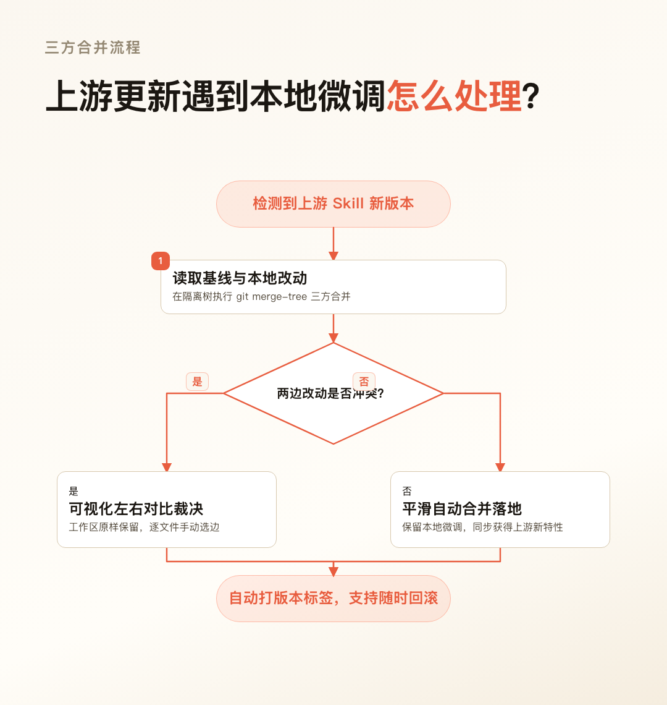

效率工具箱｜只分享亲测好用、能直接落地的免费开源工具
电脑里装了好几个 AI 编程工具？我用这个 5MB 开源小工具，一键管齐所有 Skill
摘要：开源桌面端Heron苍鹭：扫描去重、一框搜6大市场、升级不丢改动，管齐13款AI工具的Skill。
不知道你有没有同感：现在电脑上的 AI 编程工具越装越多——写代码用 Cursor 或 Trae，跑终端用 Claude Code 或 Codex，偶尔还切一下 GitHub Copilot 或 Antigravity。
工具一多，最先乱套的不是代码，而是你辛辛苦苦攒下来的 **Agent Skill**。一会儿要手动翻 `~/.claude/skills`，一会儿要拷进 `~/.cursor/skills`，时间一长，连自己改过哪一版、哪个工具里到底生没生效都搞不清楚。
最近我用上了一款叫 **Heron（苍鹭）** 的免费开源小工具，把这些散落的 Skill 一次性收拾得清清楚楚。安装包只有 5–15 MB，带颜值在线的桌面端和完整命令行，今天按真实使用动线带大家走一遍。
一、打开桌面的第一眼：只告诉你现在要决定什么
很多管理工具一打开就是密密麻麻的表格，Heron 的「概览」页反而很克制：顶部是一条「决定队列」，只把此刻真正需要你拍板的事拎出来——比如哪条投影断链了、磁盘上又发现了多少处未纳管的 Skill。
右边是清晰的系统读数，下方直接列出本机检测到的各个 AI 客户端目录和生效数量，拨动开关就能即时启用或停用。它内置了 13 款主流 AI 客户端规范，没装的工具只会诚实置灰，绝不拿假数据糊弄你。
另外桌面端自带「默认、暮色、林墨、晚晴」4 套配色主题，浅色深色随心切，还支持全局 `⌘K` / `Ctrl+K` 快捷搜索，日常当工具箱常驻托盘非常顺手。
图1：Heron 浅色主题概览页，一眼看清本机已纳管 Skill 与各客户端生效状态
二、三步理顺你的 Skill：发现、收拢、按需分发
**第一步，一键扫描发现。** 点开左侧「发现」页，Heron 会只读扫描电脑里各 AI 工具的全局目录与工作区，把你之前散落在各处的 Skill 全部列出来。你可以按客户端筛选，还能选放置方式（按建议、替换、保留原位置或就地绑定）。
**第二步，先备份再收拢去重。** 点击「收拢所选」后，Heron 会先做一次全量备份，再通过 Blake3 哈希自动合并完全相同的重复副本，统一收进 `~/.heron/skills/`。原来的路径不会被删掉，而是无缝变成指向这份唯一真相源的受管链接——旧工程和原有工作习惯完全不受影响。
**第三步，一框搜市场，逐工具开关。** 想装新 Skill 时，直接去「来源与市场」页，一个搜索框就能同时查 `skills.sh` 和 `ClawHub` 等内置市场，命中后预览计划直接安装；其他引导类市场（如 Qoder、SkillHub、ModelScope、SkillsMP）也会清晰标注，魔搭页面链接还能直接粘贴克隆安装。装好后在「我的 Skill」里勾选，就能批量投影到任意客户端。
图2：发现页列出所有未纳管 Skill，支持按客户端筛选与预览收拢计划
三、最省心的设计：升级不丢本地改动，随时能回滚
用过一阵 Skill 的朋友都知道，从网上拉下来的提示词往往要结合自己的项目改几句才能顺手。以前最怕作者更新——一更新，自己的微调全没了；不更新，又吃不到新功能。
Heron 的解法很工程化：它把存储区里的**每一个 Skill 都当成一个独立的 Git 仓库**来管理。每次点升级，底层会用 `git merge-tree` 做三方合并：如果作者改的地方和你改的地方不重叠，直接平滑合并；万一改到了同一行，它也不会强行覆盖你的工作区，而是弹出左右对比界面让你逐文件决定保留哪一边。
更安心的是，每次成功升级都会打上版本标签，万一新版本不好用，一条命令就能回滚回上一版，回滚前还会自动给你留一个保护标签。
不用在「追上游更新」和「保本地微调」之间二选一，这才是日常敢放心点升级的前提。

图3：基于独立 Git 仓库的三方合并升级流程，绝不静默覆盖你的定制内容
四、把目录交给它放心吗？只读体检与跨平台细节
很多人对「接管本地目录」的工具天然有顾虑，怕一不小心把辛辛苦苦写好的配置搞丢。Heron 在安全契约上做得相当克制：任何移动或修改前必须先备份，备份失败直接中止；目标位置如果已有未纳管的非空目录，直接停下报错不强盖；Windows 平台自动使用 `junction` 目录连接点，连管理员权限弹窗都省了。
平时如果怀疑哪个客户端的 Skill 失效了，点一下左侧的「体检」页就行。体检全程只读，会帮你把坏链、存储缺失、重复内容和病态嵌套一条条列出来，给出建议操作，真正的清理修复全部由你确认后再动手。
图4：体检页全程只读诊断，清晰列出问题路径与建议操作
五、团队协同与上手前提醒
如果你在带团队，Heron 还藏着一个很实用的功能：**锁文件 `heron.lock`**。在项目根目录导出一份不包含任何本机绝对路径的锁文件提交进仓库，新同事拉下代码后运行 `heron lock apply`，就能一键对齐全套 Skill，不用再在群里互相发压缩包。
上手前有两个真实的小提醒：第一，电脑上需要提前装好 **Git 2.38 及以上版本**（三方合并升级依赖新版本 Git）；第二，因为是个人开源项目，安装包使用了内置的 minisign 公钥验签自动更新，但没有购买昂贵的系统级商业证书，macOS 首次打开请右键点「打开」，Windows 请点「更多信息 → 仍要运行」。
常见疑问
· 常见疑问：收费吗？需要联网账号吗？
· 常见疑问：支持哪些系统？
· 常见疑问：会删掉我原来的 Skill 吗？
真实情况说明
· 真实情况说明：MIT 协议完全免费开源，纯本地运行，无需注册登录
· 真实情况说明：官方提供 macOS (M 芯片/Intel) 与 Windows x64 安装包，Linux 支持源码构建
· 真实情况说明：不会。收拢前强制全量备份，且支持「保留原位置」与只读预览
工具本身应该像苍鹭一样安静克制：平时退在后台不打扰，需要时一眼看清整片水面。如果你也在多个 AI 编程工具之间来回切换，不妨把 Heron 装起来试试。
GitHub 开源仓库：https://github.com/v5note/heron
官方网站与互动演示：https://heron.v5ai.xin
桌面端安装包下载：https://github.com/v5note/heron/releases
这套工具建议先「收藏」备用，下次换电脑或给团队配 AI 环境直接拿来用。